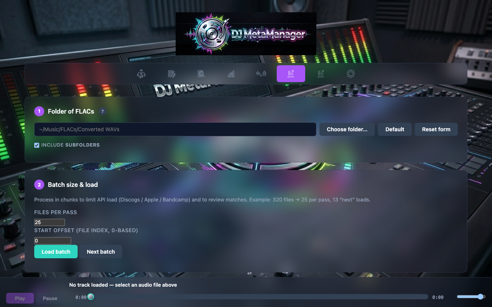
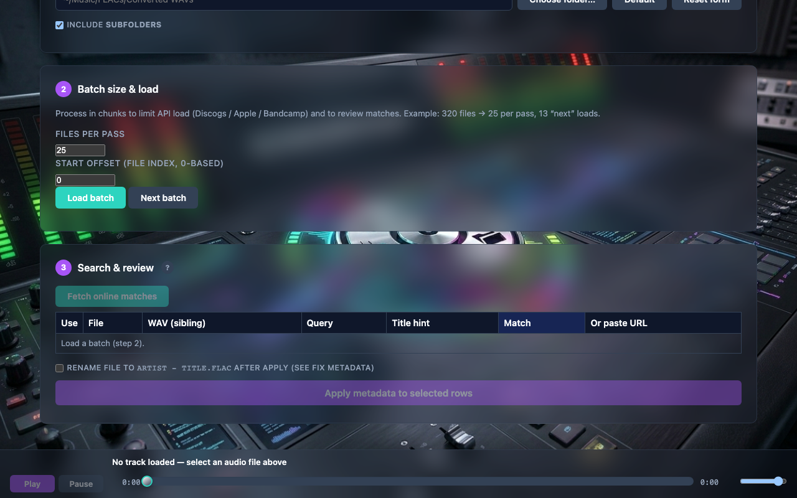

Bulk Fix (batch metadata)
Bulk Fix applies online metadata to many FLAC files in one workflow. It is ideal after WAV → FLAC bulk conversion or for any flat or tree-shaped library slice. The server builds a search query per filename, fetches combined Apple + Discogs + Bandcamp suggestions with gentle rate limiting, and lets you review before apply.
Step 1 — Load a batch
Choose a root directory, page size, and offset (same mental model as WAV batching). The scan returns each file’s parsed query, title/artist hints for track matching, and duplicate-name diagnostics when the same basename appears more than once in the tree or batch.
Explicit paths: after WAV→FLAC flat output, prefer the handoff that calls /api/bulk-fix/scan-paths so row order matches conversion order. You can still open /bulk-fix?dir=… with offset/limit for ordinary folder paging.

19-bulk-fix-step1-load.png).Step 2 — Build the table
Rows list files, queries, and controls to paste URLs or prepare for suggest. Duplicate warnings help you avoid tagging the wrong duplicate in a large library.
Step 3 — Fetch online matches
Fetch online matches runs the same search stack as Fix Metadata, one file at a time on the server. Each row gets a Match dropdown with shortcuts to open Apple, Discogs, or Bandcamp in the browser. After results return, a best guess is pre-selected using filename hints and light source tie-breaks—you can accept or change per row.

20-bulk-fix-step3-suggest.png).Same-folder WAV hints
If Track.wav sits beside Track.flac, the server may read embedded WAV tags. When both artist and title exist in the WAV, the search query can prefer that pair; partial tags can still refine track matching on multi-track Discogs releases without replacing the whole query.
Step 4 — Apply
Check the rows to update, optionally enable rename to Artist - Title.flac, and run apply. The server fetches full metadata, matches tracks using title hints when needed, embeds tags and artwork, and can log entries depending on options.

21-bulk-fix-apply.png).Browser state
Bulk Fix keeps its own localStorage keys for large batches and handoff from convert. See Reference.